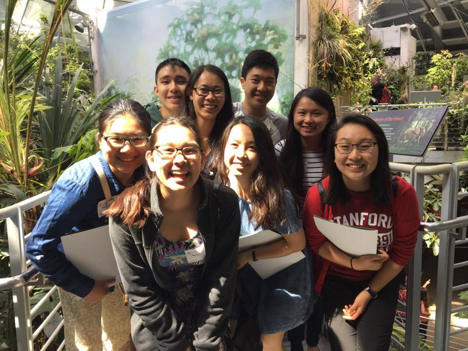

My sophomore year, I co-led an Alternative Spring Break on the intersections of science and social justice. We developed and taught a quarter-long seminar course and organized a week-long service trip throughout the Bay Area.
As a class, we explored STEM educational inequities, the science communication gap, historical injustices in science, and the role of the scientist in service.
